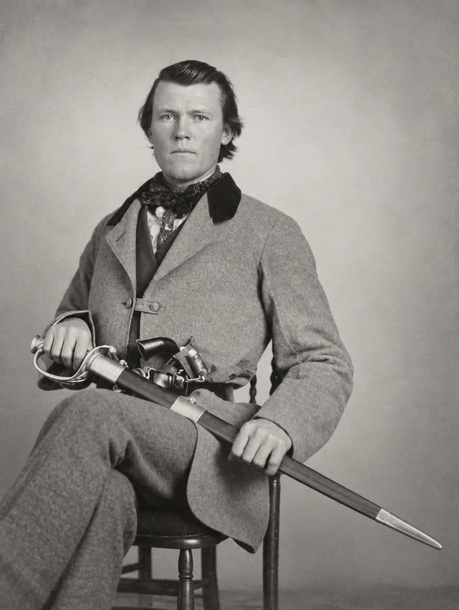
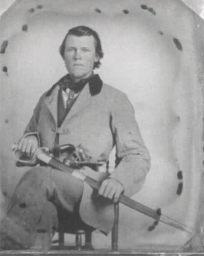

Higgsfield (Marketing Studio Image 2.5 Sunburst)
Edit and restore photos with a text prompt using Higgsfield's Sunburst image model.

What it is
Marketing Studio Image 2.5 Sunburst is an image model from Higgsfield. It creates images from a text prompt or edits images you provide. It is offered through the Higgsfield API, and the docs do not say whether it is open source.
What it can do
- Create images from a text prompt
- Edit images from up to 16 public image URLs
- Output in 1k, 2k or 4k resolution
- Choose from nine aspect ratios, such as 1:1 or 16:9
- Set quality from low to max
- Use marketing presets with prompt enhancement
What you could use it for
Restore an old family photo
You could give the model a link to a scanned old photo. Then ask it in the prompt to remove cracks and stains and sharpen the details.
Edit a picture with a prompt
You could supply an image URL and describe the change you want in plain text.
Make a wide banner image
You could create an image with a 16:9 or 21:9 aspect ratio from a text description.
Create a high-resolution image
You could set the resolution to 4k and the quality to high for a detailed result.
How to start
- Open an image model that edits photos (link below).
- Upload your photo.
- Paste this prompt: “Restore this old damaged photograph: remove the cracks, stains and fading, repair the missing areas, and sharpen the soldier's face and uniform while keeping his exact face, pose and clothing. Keep it a natural 19th-century portrait with clean tonal contrast and soft studio light, and add no text.”
What it costs
Good to know: Check the official site for current pricing. You need a Higgsfield API key to use the model.
A look inside

Official links
Sources
https://docs.higgsfield.ai/docs/models/marketing-studio-image/sunburst.md
How this reel was made
Partner links: I may earn a commission if you sign up. It costs you nothing extra.